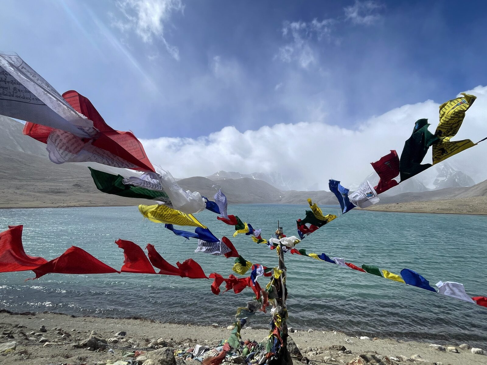
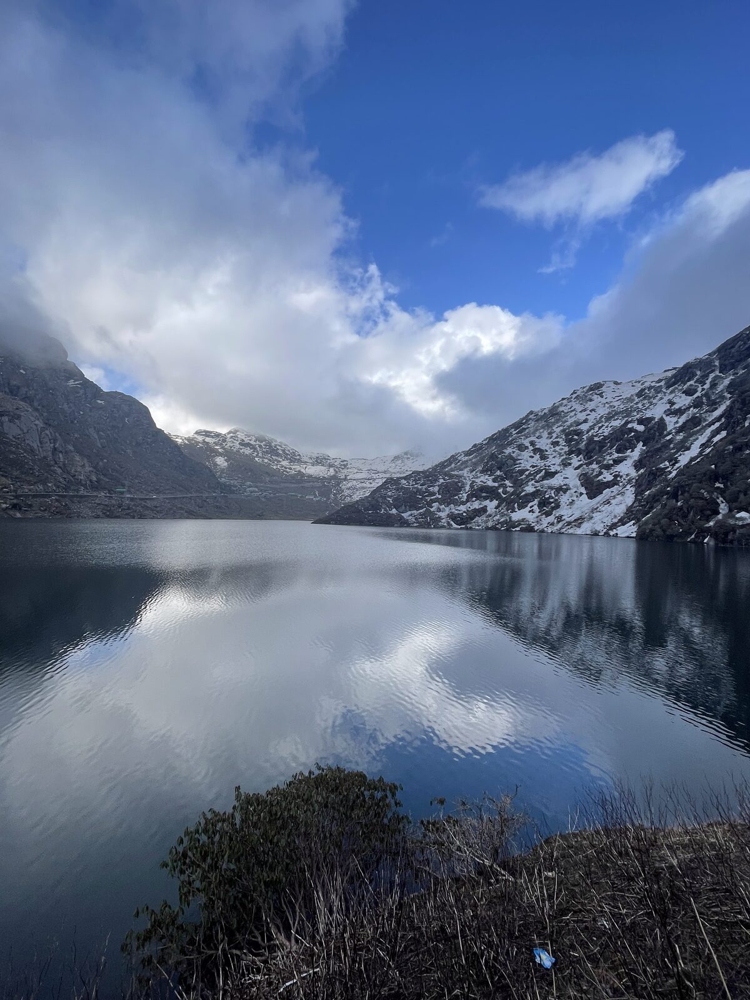
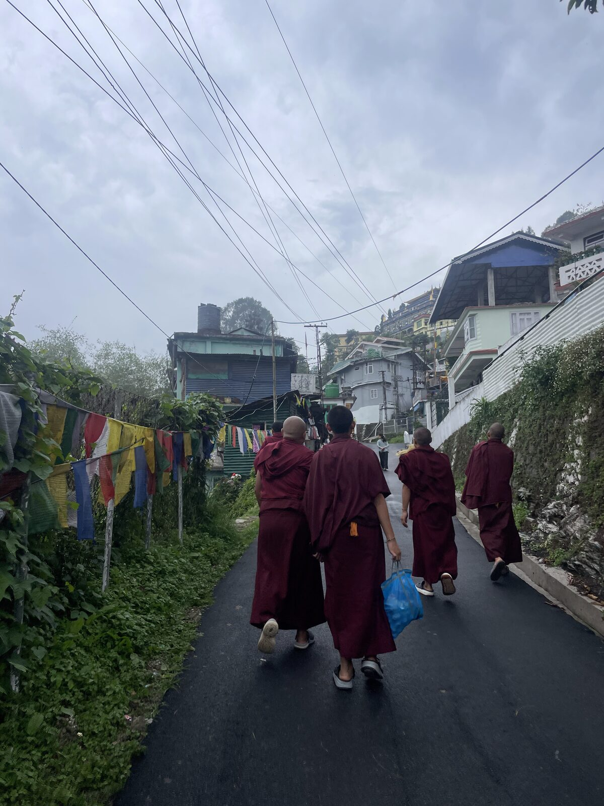

⛰️ Sikkim, India
A spring trip through the Indian Himalayan state of Sikkim, pairing Gangtok's monasteries and momos with high-altitude lakes and valleys in North Sikkim.



🗺️ Itinerary
Day 1
Arrive in Gangtok
Fly into Bagdogra and transfer to Gangtok (~3 hrs). Visit Rumtek Monastery.
Day 2
Gangtok highlights
Day trip to Nathula Pass and Tsomgo (Changu) Lake, then explore MG Road.
Day 3
Drive to Lachen
Long drive to Lachen, visiting Gurudongmar Lake, Chopta Valley, and Kala Patthar.
Day 4
Lachen to Lachung
Yumthang Valley and Zero Point en route, with stops like Bhim Nala Falls and a hot spring.
Day 5
Back to Gangtok
Drive Lachung to Gangtok.
Day 6
Departure
Drive from Gangtok back to Bagdogra (~5 hrs) for departure.
📌 Things to do
- Rumtek Monastery — major monastery near Gangtok
- Nathula Pass — high-altitude border pass
- Tsomgo (Changu) Lake — glacial lake near Gangtok
- Gurudongmar Lake — one of the highest lakes in the world
- Yumthang Valley and Zero Point — valley of flowers and snow point
- Seven Sisters Waterfalls and Singhik viewpoint
- MG Road, Gangtok — pedestrian market street
🍴 Where to eat
- Taste of Tibet (MG Road, Gangtok) — momos and thukpa
- Momo Roll Corner (MG Road, Gangtok) — momos
- Baker's Cafe (Gangtok) — cafe dining
🛏️ Where to stay
- Gangtok — guesthouse / hostel
- Lachen — local hotel
- Lachung — valley cottage
💡 Good to know
- Fly into Bagdogra; travel within Sikkim is by shared taxi or private transfer.
- North Sikkim spots like Gurudongmar and Nathula require permits via local operators.
- Prepare for 5–20°C temps and rain; carry motion-sickness medicine for the winding drives.
- Pack layers and acclimatize for the high-altitude spots.